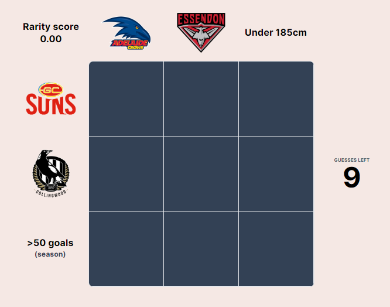
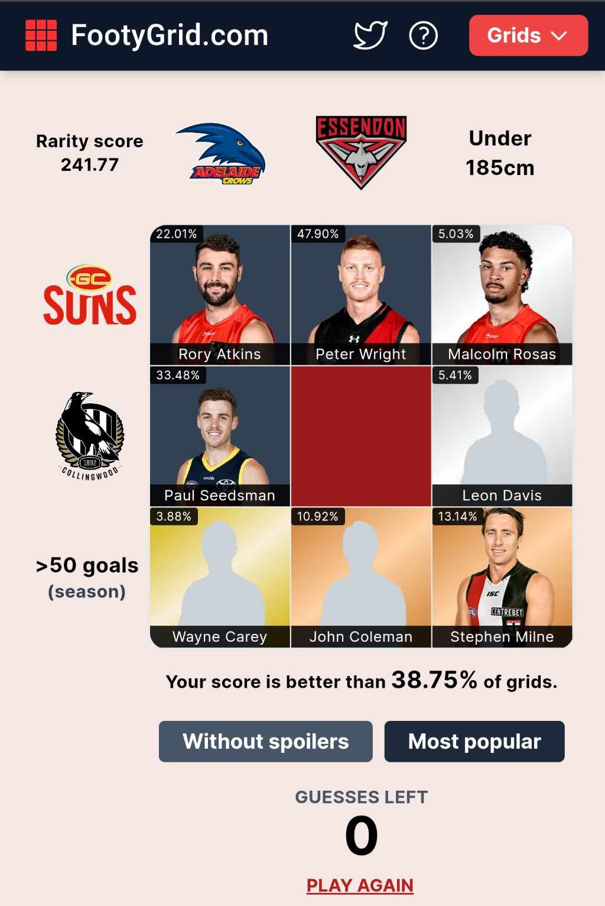

What is Footy Grid?
Footy grid is a daily AFL-themed trivia game for testing your knowledge of past and present players. The idea is pick players that intersect between two categories. These categories typically include teams, as well career or best season statistics (goals, kicks etc.), awards (Brownlow, Norm Smith) and other (e.g. height).
You are awarded a rarity score based on what other players of the game have chosen, the lower your score the rarer the player. Given people know this, sometimes a less obvious player is actually more selected than the most obvious. For example, in today’s grid Scotty Lucas was actually the most popular1 Essendon player to kick more than 50 goals in a season over Matthew Lloyd (who I would have thought would be the most obvious).
1 the game allows you to see the most popular selections once you have attempted it

My Performance
I would say I am a relatively average2 player at the game. While it varies quite a lot, I would say a solid score for me is when I am better than around 40%3 of players (although I will occasionally score in the 80th or even 90th percentile if it aligns with my area of expertise4). My attempt on the 8thof August is below:
2 Among a sea of footy tragics, so I don’t take any shame in this
3 I will elaborate on why I think the 40th percentile is at least average if not above average below
4 For example, I tend to be pretty solid at pulling out obscure Eagles and Dockers players from the late 2000’s and early 2010’s

You will notice that my attempt is missing an answer for the middle square of the grid (Essendon and Collingwood player) and that is because I could not figure out that answer and took a wild stab. As I discovered later on, the most popular player for that question was an obscure player from the late 1990’s and early 2000’s (Andrew Ukovic5) that I am certain most people had to look up or entered on their second attempt when they saw he was most popular.
5 perhaps I am too young and he was actually a household name but I somehow highly doubt this given his mediocre career statistics
This is why I would say I am average as opposed to below average for being in the 40th percentile, a lot of the scores on there are people attempting the grid multiple times or even cheating6 on their first time. I don’t really care if people do that but for me it’s a lot more fun doing it without any kind of assistance7.
6 I have seen varying interpretations of what counts as cheating, but I would certainly say googling the answer and then entering a player you have never heard of is cheating
7 and perhaps it also make me feel better when I see my less than stellar percentiles
Most Diffcult Combinations
List of Categories
Below is an exhaustive list of all the categories that have appeared in Footy Grid between the 21st of July and the 29th of August 2023 (the dates that are currently visible on the website on the date of writing this):
-
Played in a particular decade10:
80’s
90’s
00’s
-
>50 goals
300+ kicks
Average 2+ goals
Average 25+ disposals
Average 5+ marks
Average 5+ tackles
Average 100+ fantasy points
Won 15+ games
Lost 15+ games
-
Played 20 or less games
Played 50 or less games
Played 200 or more games
Never scored a goal
250+ goals
250+ games
2500+ kicks
500+ tackles
All Time Top 50 Goal Kicker
-
5+ goals
10+ marks
10+ tackles
30+ disposals
40+ disposals
25+ disposals in a final
Grand Final Player
One Club Player
-
Awards:
Brownlow Medalist
Club Best and Fairest (1980 onwards)
Colman Medalist
Rising Star Nomination
Norm Smith Medalist
-
Height:
Taller than 195cm
Under 185cm
-
Name17:
- First name Jack
Left footers18
One-Club Player
-
Coached by:
Ross Lyon
Brad Scott
Leigh Matthews
-
Teammate of19:
Lance Franklin
Isaac Smith
Nic Naitanui
Andrew Phillips
Scott Pendlebury
Jack Riewoldt
Jack Ziebell
Brodie Grundy
Dustin Fletcher
Luke Shuey
Tom Rockliff
Phil Davis
Stephen Coniglio
Dylan Buckley
Daniel Gorringe
-
Guernsey number:
Single digit
Double digit
All Australian (1991 to present)
8 University and Fitzroy as defunct teams will never appear as a category, although it says in the Footy Grid help page that Fitzroy will be combined in with Brisbane in the future
9 The South Melbourne and Sydney swans; the Brisbane Bears and Lions; Footscray and Western Bulldogs are grouped together
10 we can probably extend this to played in any decade, these are just the decades we have seen so far
11 includes finals
12 there are probably different stats and thresholds that will appear in the future
13 includes finals
14 there are probably different stats and thresholds that will appear in the future
15 includes finals
16 there are probably different stats and thresholds that will appear in the future
17 there will probably be other names that crop up in the future
18 Data available 2013 onwards
19 These ones typically honour retirees
As it is the most prominent category, we will mainly focus on teams in this article but some of the other categories may appear as well. Also note that generally, according the the rules, when a team category intersects with a non-team category, the player need not have satisfied the category whilst playing at the club20.
20 e.g. Gary Ablett Jr. counts as a Grand Final player for Gold Coast even though he only ever played in grand finals for Geelong
Obtaining the Data
In order to look through the possible combinations, I will use R as I did in my previous post. Likewise, I will also be using the fitzRoy package to obtain my data. Footy Grid has the full history of AFL players, so I will use the fryzigg data. There are also some player details that are needed and for that, I will use the AFL Tables.
Let’s begin by loading our required packages21.
21 As I outline below, I will only be using tidyverse for data wrangling this time.
We will get the data using the following code22:
22 Note that I am using the fst package below to save the data locally instead of using RDS files on suggestion from one of the readers of my previous posts (see the “Being a good citizen” call-out in my previous post for more information on why I save the output locally)
if(file.exists("data/player_stats_fryzigg.fst")) {
player_stats_fryzigg <- read_fst("data/player_stats_fryzigg.fst") |> as_tibble()
} else {
player_stats_fryzigg <- fetch_player_stats_fryzigg(season = 1897:2023)
write_fst(player_stats_fryzigg, "data/player_stats_fryzigg.fst")
}
if(file.exists("data/player_details.fst")) {
player_details <- read_fst("data/player_details.fst") |> as_tibble()
} else {
player_details <- fetch_player_details_afltables()
write_fst(player_details, "data/player_details.fst")
}Other Data Sources
While the fitzRoy sources provide most of the data we need but some data is still missing.
Brownlow medal data
As with the Norm Smith medal in my previous post, the Brownlow medal winners are not available in the fitzRoy data. However they are available on AFL Tables, Wikipedia and the official AFL Website. As it turns out, the easiest one to scrape is the AFL website, so that is what we will use.
# get brownlow
brownlow_url <- "https://www.afl.com.au/brownlow-medal/history"
brownlow_url |>
read_html() ->
brownlow_html
brownlow_html |>
html_table(header = TRUE) |>
_[[1]] |>
View()All-Australian Data
The official AFL website has a table of all the all players selected in All Australian Teams since 1953 here23.
23 Before 1991 it was either the VFL team of the year or based on the interstate carnival, hence why Footy Grid only considers All Australian from 1991 onwards
"data-Dtbc3.csv"[1] "data-Dtbc3.csv"Data Wrangling
Unlike the previous post, I will only use the tidyverse24.
24 While the experiment of producing both tidyverse and data.table of the code was an interesting one, I have decided that it is probably too time consuming going forward.
player_stats_fryzigg$player_team |> unique() -> teams_fryzigg
player_details$Team |> unique() -> teams_afl_tables
tribble(
~team_name_raw, ~team_name,
"Adelaide", "Adelaide",
"Brisbane Lions", "Brisbane Lions",
"Brisbane Bears", "Brisbane Lions", #"Brisbane Bears",
"Carlton", "Carlton",
"Collingwood", "Collingwood",
"Essendon", "Essendon",
"Fitzroy", "Fitzroy",
"Fremantle", "Fremantle",
"GWS", "Greater Western Sydney",
"Greater Western Sydney", "Greater Western Sydney",
"Geelong", "Geelong",
"Gold Coast", "Gold Coast",
"Hawthorn", "Hawthorn",
"Melbourne", "Melbourne",
"North Melbourne", "North Melbourne",
"Port Adelaide", "Port Adelaide",
"Richmond", "Richmond",
"St Kilda", "St Kilda",
"Sydney", "Sydney",
"West Coast", "West Coast",
"University", "University",
"Western Bulldogs", "Western Bulldogs"
) ->
team_name_mapping
player_stats_fryzigg |>
select(player_first_name, player_last_name, match_round, match_date, metres_gained) |>
View()
player_details |>
mutate(
player_first_season = as.integer(str_sub(Seasons, 1, 4))
) |>
select(
player_full_name = Player,
player_team = Team,
player_first_season,
player_height = HT,
player_weight = WT,
) ->
player_details_modified
player_stats_fryzigg |>
mutate(
match_season = as.integer(str_sub(match_date, 1, 4)),
match_date = as.Date(match_date, format = "%Y-%m-%d"),
season_decade = paste0(str_sub(match_season, 1, 3), "0s")
) |>
group_by(
player_id, player_team
) |>
mutate(
player_first_season = min(match_season)
) |>
ungroup() |>
group_by(
player_id, player_first_name, player_last_name, player_first_season, player_team,
match_season, season_decade
) |>
summarise(
.groups = "drop",
season_games = n(),
season_disposals = sum(disposals, na.rm = TRUE),
season_kicks = sum(kicks, na.rm = TRUE),
season_handballs = sum(handballs, na.rm = TRUE),
season_marks = sum(marks, na.rm = TRUE),
season_goals = sum(goals, na.rm = TRUE),
season_behinds = sum(behinds, na.rm = TRUE),
season_hitouts = sum(hitouts, na.rm = TRUE),
season_tackles = sum(tackles, na.rm = TRUE)
) |>
View()
player_details |>
filter(is.na(Goals)) |>
arrange(desc(Games)) |>
View()Final Output
Player Lookup Table
Below I have a lookup table, this table is not for cheating purposes but more done as an exercise and perhaps for looking into who some obscure examples might have been after you have attempted the quiz on the day. I may continue to update this as new categories get introduced, but for now I present it with all the categories that have come about between the 21st of July and the 8th of August 2023.
Comments